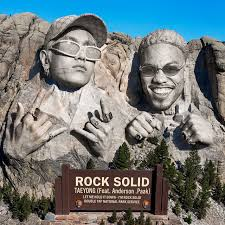

Song and Album Reviews
Check out the latest song and album reviews here! I will be posting reviews of songs and albums from various groups and artists, so check back often for updates on your favorite groups and artists!
Featured Reviews
Rock Solid by TAEYONG ft. Anderson .Paak Review

Rock Solid by TAEYONG ft. Anderson .Paak"Rock Solid" is a track that showcases TAEYONG's versatility as an artist. It is his first title track after being released from his military service. The collaboration with Anderson .Paak brings a unique blend of K-Pop and R&B elements that creates a compelling listening experience.
The song features a catchy beat and smooth vocals from both artists, making it a standout track in TAEYONG's discography. The lyrics explore themes of resilience and strength, which resonate with listeners on a personal level. Overall, "Rock Solid" is a must-listen for fans of TAEYONG and Anderson .Paak, as well as anyone looking for a fresh and dynamic sound in the K-Pop genre.